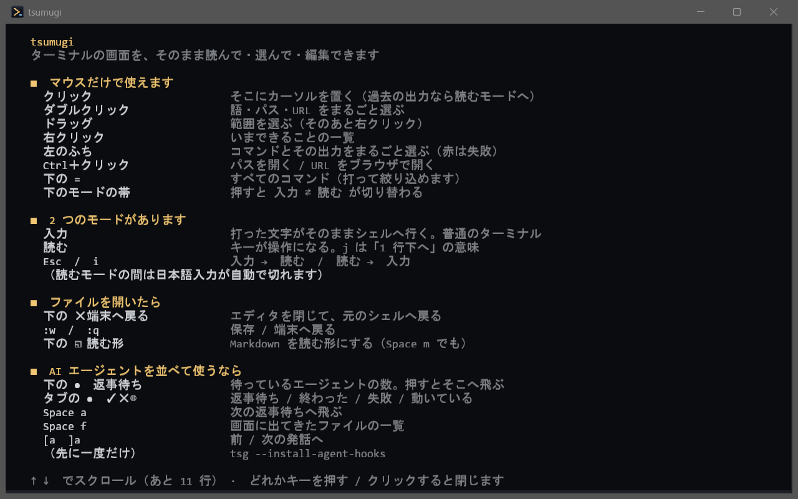
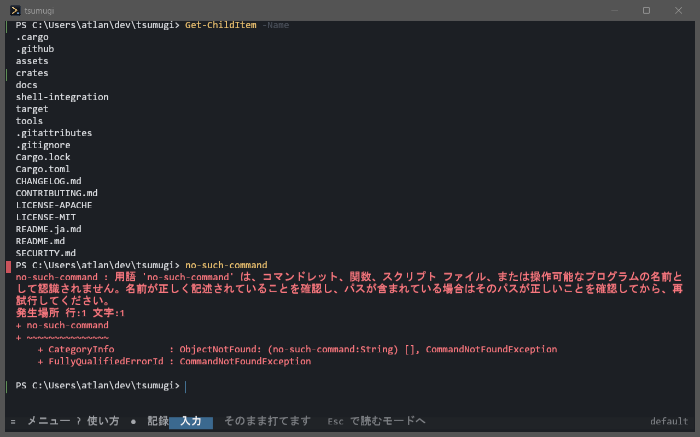
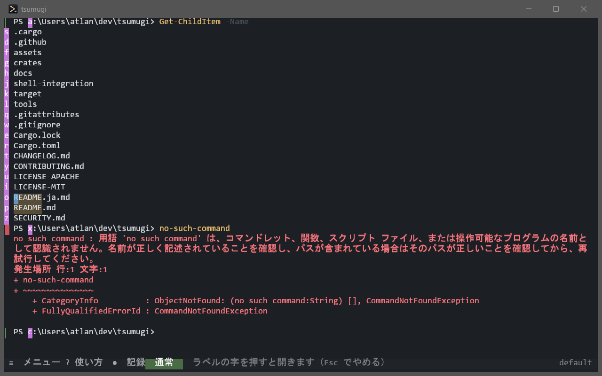
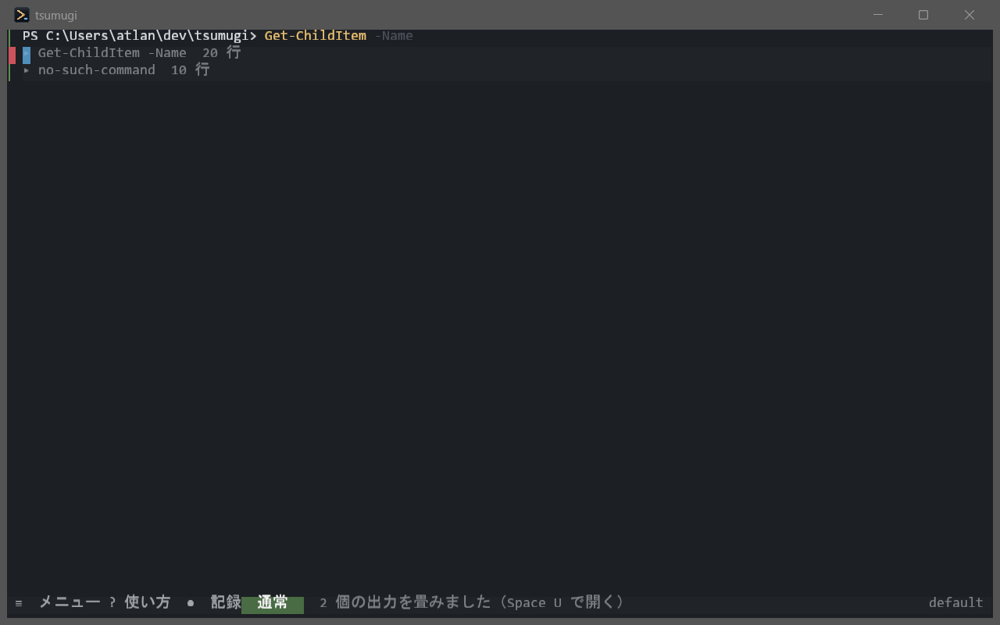
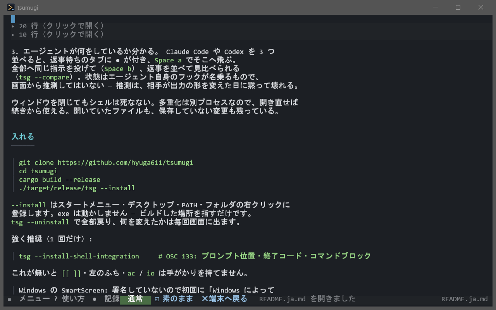
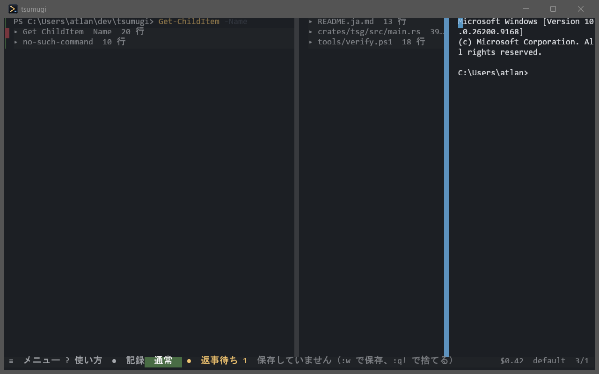

ターミナルの画面そのものを、vim で編集できるドキュメントとして扱う。
そしてその全操作にマウスの道を用意する。
スクロールバックを「読んで・選んで・編集できるバッファ」として扱い、 中で走っている AI エージェントがいつ人の番になったかを知っている ターミナルエミュレータ。Rust 製・Windows。
j k w [[ ]] で歩き、
ac でコマンドと出力をまるごと選び、ヤンクし、jq に通し、
同じペインで :e を打てばファイルが開く。エディタから見れば格子もファイルも
同じ「文書」なので、同じキーが両方に効く。
Space a でそこへ飛ぶ。状態は
エージェント自身のフックが名乗るもので、画面から推測してはいない。
推測は、相手が出力の形を変えた日に黙って壊れる。
git clone https://github.com/hyuga611/tsumugi
cd tsumugi
cargo build --release
./target/release/tsg --install
--install はスタートメニュー・デスクトップ・PATH・フォルダの右クリックに
登録します。exe は動かしません — ビルドした場所を指すだけです。
tsg --uninstall で全部戻り、何を変えたかは毎回画面に出ます。
強く推奨（1 回だけ）:
tsg --install-shell-integrationOSC 133 でプロンプトの位置と終了コードを知らせる設定です。これが無いと 左のふち・コマンドブロック・畳みが手がかりを持てません。
開いて F1。使い方は「マウスだけで使えます」から始まります。

| 打つ | 普通のターミナルです |
Esc | 読むモード。下の帯の色が変わります |
| 帯を押す | キーを知らなくても 入力 ⇄ 読む を行き来できます |
| ダブルクリック | 語・パス・URL をまるごと選ぶ |
Ctrl＋クリック | そのパスや URL を開く |
| 右クリック | いまここでできること |
下の ≡ | すべてのコマンド（打って絞り込めます） |

出力を正規表現で当てにいくのではなく、シェル統合（OSC 133）が知らせた
境目をそのまま印にしています。だから嘘の印が出ない。
[[ ]] で前後のコマンドへ、[e ]e で
失敗したコマンドへ飛べます。

Space l。実際に在るものだけに振るので、版番号などには付かない。
フォルダを選ぶとプロンプトへ cd が置かれます（Enter は自分で）。
目で見つけたものへ、手を動かさずに届くのが狙いです。

Space O で全部畳む。何を畳んだかが行に残る。
AI エージェントの出力は長い。畳めないと、前のやり取りへ戻るだけで一苦労になります。
git diff（Space g）はファイル単位に畳めます。

Space m。もう一度で素のまま（構文強調つきで編集できる）。
tsg --install-agent-hooks # Claude Code / Codex に配線（1 回だけ）タブの ● | 返事待ち |
✓ / ✕ | 終わった / 失敗 |
Space a | 次の返事待ちへ飛ぶ |
Space b | 見えているペイン全部へ同じ指示 |
| タスクバーの点滅 | 窓が裏に居るときだけ・変わった瞬間だけ |
終了コードで答えるので、台本の if に書けます。
tsg --agents # session <TAB> pane <TAB> state
tsg --prompt "テストを直して" --wait
tsg --wait --until done --timeout 600
tsg --broadcast "この diff を見て" --wait
tsg --compare # 返事を 1 枚に並べる
tsg --layout agents # 3 分割で開く
%APPDATA%\tsumugi\config.toml。無くても動き、壊れていても既定で起動して
警告だけ出します。メニュー → 設定ファイルを開くで、書けるものが全部
コメントで並んだ雛形ごと作られます。保存した瞬間に効きます。
[ui]
lang = "auto" # "ja" / "en" / "auto"
[window]
opacity = 0.85
blur = true
[font]
size = 18.0
family = "Cascadia Code" # 無ければ既定の候補へ落ちます
ligatures = true
ambiguous_width = "narrow" # "wide" で罫線素片などを 2 幅に
[theme]
name = "夜霧" # 夜霧 / 墨 / 白磁
Windows で開発し、実機で確かめています。
macOS と Linux はビルドが通り、端末・多重化・エディタ・モーダルの層は
プラットフォームに依りませんが、ウィンドウの装飾・IME・--install は
Windows の API で書いてあり、まだ誰も動かしていません。
まだ無いもの:
file:// は断る、画像の大きさに上限を置く）